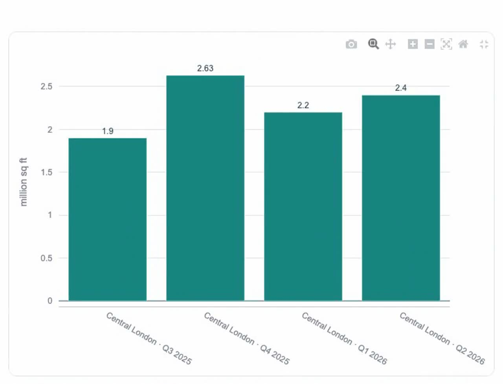

Explore London's
office market.
Follow the evidence.
A research agent for landlords and asset managers. Turn public market sources into a dated briefing, then ask the next question.
Public Python PoC. Free hosting. Your API keys.

City / West End / Canary Wharf / Midtown & Fringe / Wider London
Coverage varies by source and submarket.Public research for
leasing discussions.
Rents, leasing and supply rarely arrive in one neat dataset. The agent researches across selected public sources, keeps their dates and definitions, and shows where the evidence runs out.
Use it to prepare a leasing discussion, explore competing supply, or challenge an assumption about occupier demand. Every output is a starting point for human review.
- Rents & leasing
- Prime and Grade A rents, vacancy, availability, take-up and leasing activity.
- Supply & submarkets
- New development, refurbishment, pre-lets and differences across London.
- Demand & drivers
- Interest rates, employment, flight to quality, sustainability and hybrid working.
See the research
become a conversation.
Real interface recordings from 11 October 2026.
Earlier interface, shown at 2× speed.
Selected excerpts; generation waits omitted.
A briefing you can inspect
Read the findings, explore supported charts and follow the source references. Dates and coverage gaps stay visible.
Ask the next question
Explore a saved finding or start independent research. This recording includes a partial answer and a stopped follow-up.
The public demo now runs on demand. The reviewed report for 5–11 October 2026 contained 38 claims and five charts, with two editorial corrections. Its draft took 3 minutes 59 seconds and recorded $0.086 in model usage, excluding earlier collection, hosting and human review. A later fresh briefing stopped without a report. These examples do not establish current market conditions or reliable completion.
One agent.
A source behind the story.
A model chooses what to investigate.
Python checks what it can safely do
and what the evidence can support.
- 1
Start with a question
Ask about London offices, collect sources or prepare a dated briefing. Every run starts with you.
- 2
Research with focused skills
The shared agent loads the relevant skill, searches or retrieves evidence, and continues within action, time and usage limits.
- 3
Inspect the result
Facts, interpretation, forecasts and watchpoints stay distinct. Charts use compatible measurements. Missing data stays visible.
Explore the Python architecture and 14 runtime skills
Streamlit calls a shared model-directed runner. A fast OpenRouter router checks chat context; the research model selects registered skills and approved typed tools. Tavily supplies search. Python validates tool inputs, deduplicates evidence, calculates comparisons and stores results in a session-owned SQLite database.
The default model roles are Clef Flash for routing and leasing signals, and DeepSeek V4.1 Flash for research. Visitors can configure model identifiers. Availability depends on their provider account.
Workflow and visualization
- Independent market research
- Market evidence collection
- Dated briefing preparation
- Market data audit
- Market trend analysis
- Visualization selection
- Visualization data preparation
Market topics
- Office rents
- Leasing activity
- Supply pipeline
- Submarkets
- Macro drivers
- Occupier demand
- Market events
Start with examples.
Try live research.
Explore the synthetic demo for free.
Bring your own keys for fresh research.
Free Streamlit hosting can sleep when idle.
The app may take a moment to wake.
Explore without credentials
Synthetic demo opens immediately. Try the chat, briefing, charts and source inspection with labeled example data and scripted model responses.
Use your own providers
Choose live mode and enter your OpenRouter and Tavily keys in the sidebar. There is no passcode. Provider usage may charge your accounts.
Keep what matters
Your keys and research belong to your current session. Download reports as HTML. Clear the session to discard its keys, conversation and data.
The hosted Python process receives your keys and passes them to the corresponding providers. Keys are excluded from saved records. Session data is temporary; disconnect cleanup is best effort.
Prefer to run it locally?What the evidence
can support.
Coverage and reliability remain part of the research question.
Read the demo scope- Coverage is uneven
- Canary Wharf and Midtown measurements are incomplete. Wider London has selected district samples. Central London data does not establish whole-London coverage.
- Sources need interpretation
- Publications can be stale, blocked or inconsistent. Asking rents are not achieved rents. Availability is not vacancy. No update does not mean no market change.
- Results need review
- The agent can miss sources or misstate measures. Research can stop with partial results. Historic report examples include editorial corrections.
- The demo has a clear boundary
- Text chat, on-demand reports and HTML downloads. No automatic monitoring, asset valuations or portfolio advice. Live provider calls may incur charges.
Public sources.
Preserved context.
Office market research
Savills
BNP Paribas Real Estate
Economy & employment
Office for National Statistics
Bank of England
Greater London Authority
News & announcements
Knight Frank · City AM
Deutsche Bank · Lendlease
London Fire Brigade
Examples from the configured source catalogue. Access and evidence vary by run. A source link does not establish independent corroboration.
What would you ask
before your next leasing discussion?
Try a question. Inspect its sources. Decide what needs a closer look.
Where this PoC could go next
Agree which business discussion the briefing should support, which sources matter and who reviews the result. Compare model quality, response time and cost on the same tasks. Resolve coverage gaps before expanding scope.